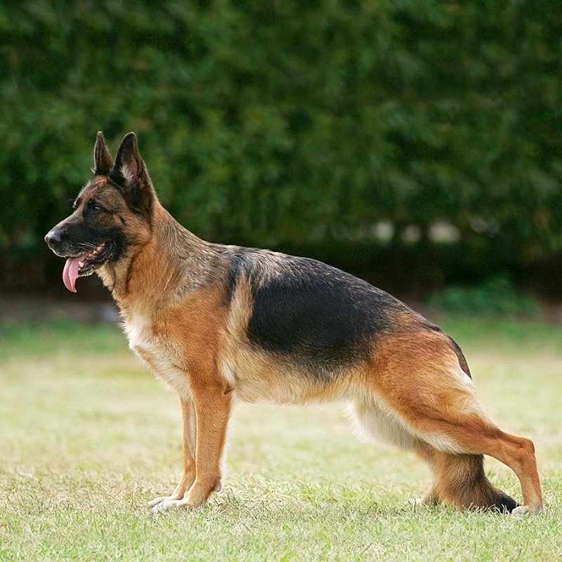
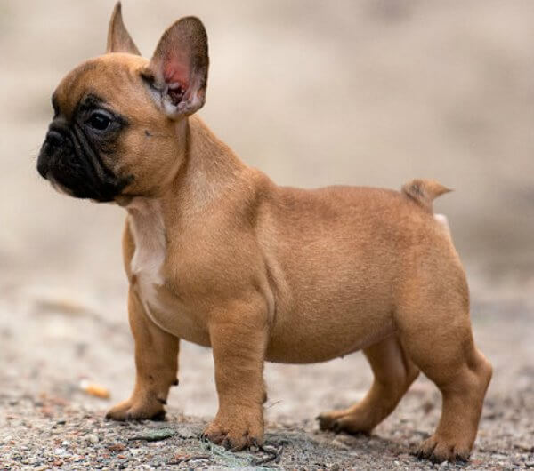

Explora la Diversidad Canina Global
Desde el leal Pastor Alemán hasta el diminuto Chihuahua, cada raza de perro tiene una historia única y características fascinantes. Sumérgete en este viaje por el mundo canino.
Razas Populares en el Mundo

Labrador Retriever
Amigable y leal, ideal para familias. Originario de Canadá.

Pastor Alemán
Inteligente y protector, excelente perro de trabajo. Originario de Alemania.

Bulldog Francés
Juguetón y cariñoso, perfecto para apartamentos. Originario de Francia.